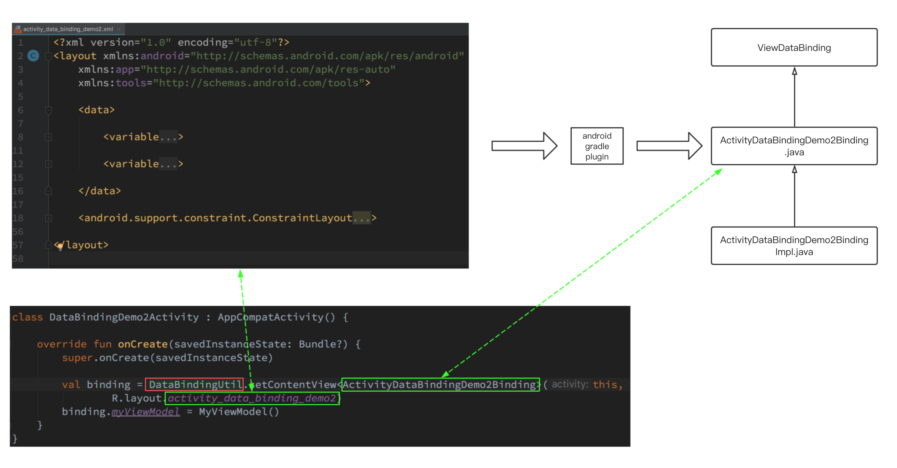

简单学习一下 Android 数据绑定的基本用法。前一篇 中听完对 Android 数据绑定的各种吐槽后再来了解数据绑定的用法并动手实践一下。(是不是顺序搞反了？)
本文是这篇博客 的学习笔记。主要内容包括：
数据绑定介绍
数据绑定和事件绑定
数据绑定的几种方式
BindingAdapter
数据绑定介绍 官网 关于数据绑定的介绍如下：
The Data Binding Library is a support library that allows you to bind UI components in your layouts to data sources in your app using a declarative format rather than programmatically.
简单来说这个库的作用是：
减少 Activity 中大量的 UI 相关调用，让其简单易维护
使用声明的方式而非编程的方式将 UI 布局跟数据绑定
什么是 UI 相关的调用呢？相信 findViewById() 方法你一定不陌生。你可能已经习惯了使用 findViewById()，它很直白。但它是编程式的，并不优雅。
1 2 TextView textView = findViewById(R.id.sample_text); textView.setText(viewModel.getUserName());
实际项目中你会一遍又一遍地写 findViewById() 这种代码，最终会很烦。这也是 ButterKnife 之类的库以及 kotlin-android-extensions 插件的由来。
使用 ButterKnife 可以减少 findViewById() 调用。
1 2 3 4 5 6 7 8 9 10 class ExampleActivity extends Activity @BindView (R.id.user) EditText username; @BindView (R.id.pass) EditText password; @BindString (R.string.login_error) String loginErrorMessage; @OnClick (R.id.submit) void submit () } }
使用 kotlin-android-extensions 插件则可以直接将 XML 布局文件中 id 作为控件本身来使用。
1 2 3 4 5 6 7 8 9 10 11 import kotlinx.android.synthetic.main.activity_data_binding_demo.*class DataBindingDemoActivity : AppCompatActivity override fun onCreate (savedInstanceState: Bundle ?) super .onCreate(savedInstanceState) val binding = DataBindingUtil.setContentView<ActivityDataBindingDemoBinding>(this , R.layout.activity_data_binding_demo) buttonUpdate.text = "this is a button" }
但无论如何，以上这些改进方案仍然还是编程式的。那怎样才算声明式的呢？要像这样！
1 2 <TextView android:text ="@{viewmodel.userName}" />
要在项目中使用数据绑定，需要进行如下配置：
1 2 3 4 5 6 android { .... dataBinding { enabled = true } }
数据绑定主要涉及内容包括：
XML 布局文件
ViewDataBinding
生成的 Binding 类
DataBindingUtil

其中，
XML 布局文件跟普通的 XML 文件稍稍有所不同。其结构如下：
1 2 3 4 5 6 7 8 9 10 11 12 <layout > <data > <variable name ="message" type ="String" /> </data > </layout >
1 2 val binding = DataBindingUtil.setContentView<ActivityDataBindingDemo2Binding>(this , R.layout.activity_data_binding_demo2)
数据绑定的几种方式 先来看一个最简单的例子。
XML 布局文件如下：
1 2 3 4 5 6 7 8 9 10 11 12 13 14 15 16 17 18 19 20 21 22 23 <layout xmlns:android ="http://schemas.android.com/apk/res/android" xmlns:app ="http://schemas.android.com/apk/res-auto" xmlns:tools ="http://schemas.android.com/tools" > <data > <variable name ="message" type ="String" /> </data > <TextView android:id ="@+id/text" android:layout_width ="wrap_content" android:layout_height ="wrap_content" android:text ="@{message}" app:layout_constraintBottom_toBottomOf ="parent" app:layout_constraintEnd_toEndOf ="parent" app:layout_constraintHorizontal_bias ="0.5" app:layout_constraintStart_toStartOf ="parent" app:layout_constraintTop_toTopOf ="parent" tools:text ="show a message" /> </layout >
Activity 代码如下：
1 2 3 4 5 6 7 8 9 10 class DataBindingDemoActivity : AppCompatActivity override fun onCreate (savedInstanceState: Bundle ?) super .onCreate(savedInstanceState) val binding = DataBindingUtil.setContentView<ActivityDataBindingDemoBinding>(this , R.layout.activity_data_binding_demo) binding.message = "hello, databinding" } }
对于基于类型和 String 类型，我们按上述方式写是没有问题。那是否可以支持自定义类型呢？
1 2 3 4 5 6 7 8 9 10 11 12 13 <layout xmlns:android ="http://schemas.android.com/apk/res/android" xmlns:app ="http://schemas.android.com/apk/res-auto" xmlns:tools ="http://schemas.android.com/tools" > <data > <variable name ="viewmodel" type ="com.demo.MyViewModel" /> </data > <TextView android:text ="@{viewmodel.message}" /> </layout >
假设 MyViewModel 代码如下：
1 2 3 class MyViewModel public String message; }
你使用这种方式更新会发现并不生效：
binding.viewmodel.message = "hello, data binding"
数据绑定是支持自定义类型的。但需要额外的工作来实现，有几种不同的方式：
实现 Observable 接口或继承 BaseObservable 类
使用 ObservableField 类
使用 LiveData 类
以 MyViewModel 中的三个字段分别加以说明。
1 2 3 4 5 6 7 8 9 10 11 12 13 14 15 class MyViewModel : BaseObservable var message: String = "hello, data binding" set (value) { field = value notifyPropertyChanged(BR.message) } var message2 : ObservableField<String> = ObservableField("hello, data binding" ) val liveMessage = MutableLiveData<String>() }
Observable 接口 不推荐直接使用 Observable 接口，而是使用它的实现类 BaseObservable。BaseObservable 提供两个方法：
notifyPropertyChanged(int fieldId) - 通知监听器指定字段有更新
notifyChange() - 通知监听器所有字段都有更新
注意这里重写了 message 字段的 setter 方法，在更新字段后调用了 notifyPropertyChanged 通知更新。
ObservableField 类 从源码可以看到 ObservableField 其实也是继承自 BaseObservable，Android SDK 提供这个类不过是让开发者更方便而已。
ObservableField 对单一的字段进行包装，并且在字段值发生变化时调用 notifyChange()。
1 2 3 4 5 6 7 8 9 10 11 12 13 14 15 16 abstract class BaseObservableField extends BaseObservable public BaseObservableField () } } public class ObservableField <T > extends BaseObservableField implements Serializable static final long serialVersionUID = 1L ; private T mValue; public void set (T value) if (value != mValue) { mValue = value; notifyChange(); } } }
LiveData 类 上述两种方式各有不足：
Observable 接口 - 这种方式对外暴露了实现细节 (需要开发者自己调用 notify() 方法) 且依赖于生成的 BR 类
ObservableField 类 - 在 Observable 接口的基础上有所改进但仍然略显繁琐
所以个人推荐使用 LiveData 类。不过使用 LiveData 时记得要在 Activity 进行如下调用，否则是 UI 是无法跟数据同步更新的。
1 2 3 4 val binding = DataBindingUtil.setContentView<ActivityDataBindingDemo2Binding>(this, R.layout.activity_data_binding_demo2) // 给 binding 设置 lifecycle owner 后才能对 live data 进行数据绑定 binding.setLifecycleOwner(this)
BindingAdapter 数据绑定很强大的地方在于 BindingAdapter。听名字很难理解？直接看代码。
XML 布局文件如下，功能很简单，展示一个网络图片。注意这里非常神奇的 app:imageUrl！
1 2 3 4 5 6 7 8 9 10 11 12 13 14 15 16 17 18 19 20 21 22 23 24 25 26 27 28 29 30 31 32 <?xml version="1.0" encoding="utf-8"?> <layout xmlns:android ="http://schemas.android.com/apk/res/android" xmlns:app ="http://schemas.android.com/apk/res-auto" xmlns:tools ="http://schemas.android.com/tools" > <data > <variable name ="imageUrl" type ="String" /> </data > <android.support.constraint.ConstraintLayout android:layout_width ="match_parent" android:layout_height ="match_parent" > <ImageView android:id ="@+id/imageView" android:layout_width ="300dp" android:layout_height ="0dp" android:layout_marginTop ="180dp" android:scaleType ="centerCrop" app:imageUrl ="@{imageUrl}" app:layout_constraintDimensionRatio ="H,16:9" app:layout_constraintEnd_toEndOf ="parent" app:layout_constraintHorizontal_bias ="0.5" app:layout_constraintStart_toStartOf ="parent" app:layout_constraintTop_toTopOf ="parent" tools:srcCompat ="@tools:sample/avatars" /> </android.support.constraint.ConstraintLayout > </layout >
ImageView 并没有 app:imageUrl 属性，它是哪里来的呢？原来使用数据绑定库中提供的 @BindingAdapter 注解可以很轻松地 ImageView 生成一个名为 imageUrl 的自定义属性：
1 2 3 4 5 6 7 8 public class Utils private Utils () @BindingAdapter ("app:imageUrl" ) public static void setImageUrl (ImageView view, String url) Glide.with(view.getContext()).load(url).placeholder(R.color.grey).into(view); } }
剩下的 Activity 的代码就更简单了，可以像使用本地图片资源一样使用网络图片：
1 2 3 4 5 6 7 8 9 10 11 12 13 14 15 class DataBindingAdapterActivity : AppCompatActivity override fun onCreate (savedInstanceState: Bundle ?) super .onCreate(savedInstanceState) val binding = DataBindingUtil.setContentView<ActivityDataBindingAdapterBinding>(this , R.layout.activity_data_binding_adapter) binding.imageUrl = "http://e.hiphotos.baidu.com/image/pic/item/dc54564e9258d1092f7663c9db58ccbf6c814d30.jpg" } override fun onDestroy () super .onDestroy() Glide.get (this ).clearMemory() } }
很久很久以前我想基于 Glide 来造一个简单的轮子：扩展 ImageView，给它提供一个 setImageUrl() 方法以方便地加载网络图片。后来因为我很忙，每天都很忙(说白了就是拖延)，这个想法就搁浅了。不过现在看来，这个轮子没必要了。
总结 Android 数据绑定是个不错的技术，合理地使用可以为开发带来相当大的方便，最让人眼前一亮的是 BindingAdapter。但不得不说的是，对比 vue.js 中的数据绑定，使用起来还是复杂太多，有太多繁琐的细节(静态语言的限制？)。
这是从 vue.js 摘抄的一个例子：
1 2 3 <div id ="app" > {{ message }} </div >
1 2 3 4 5 6 var app = new Vue({ el: '#app' , data: { message: 'Hello Vue!' } })
这个 vue.js 的例子跟 Android 对比一下：
没有 <data> 和 <variable> (这两个标签完全是形式上的东西)
不需要用插件生成类似 ActivityDataBindingDemoBinding 的代码 (可能有，但对开发者不可见)
{{}} 比 @{} 看起来更清晰，写起来也更不容易出错没有类似 DataBindingUtil 的类，不容易出错 (DataBindingUtil 工具类有超多的方法，每次使用得小心地选择)
vue.js 中的数据绑定无疑比 Andriod 简明很多，如果 Android 的数据绑定库能有这么易懂，相信能吸引更多开发者使用。
参考 Using data binding in Android - Tutorial